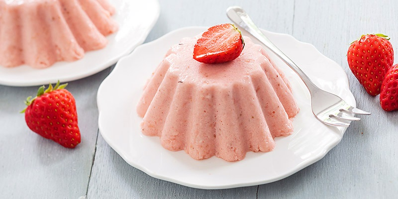

Lekkere frisse bavarois gemaakt met maar 5 ingrediënten waaronder aardbeien met room, een perfect zomers dessert
Ingrediënten
250 gr aardbeien
250 gr slagroom
3 blaadjes gelatine
2 eetlepels citroensap
75 gr suiker
zonnebloemolie om in te vetten
Bereidingwijze
Week de blaadjes gelatine in koud water. Pureer de aardbeien met de staafmixer helemaal fijn.
Doe de aardbeiensaus in een pannetje samen met het citroensap en verwarm dit, het hoeft niet te koken.
Knijp de gelatine uit en voeg toe aan de warme aardbeiensaus, laat het mengsel vervolgens weer iets afkoelen, niet te ver anders wordt deze al stijf.
Mix de slagroom en de suiker lobbig. Voeg de aardbeiensaus met de opgeloste gelatine toe en mix er doorheen.
Vet de vormpjes in met een beetje zonnebloemolie, zo laat de bavarois straks beter los, of gebruik siliconen puddingvormpjes.
Giet het mengsel in de vormpjes en zet minimaal 3 uur in de koelkast, of een hele nacht.
Doe wat warm water in een kom en houd de onderkant van de vormpjes kort hierin zodat de aardbeien bavarois makkelijk los komt.
Stort de bavarois daarna op een bordje. Garneer de bavarois eventueel met wat extra verse aardbeien.

Tip Je kan aardbeien bavarois in een glaasje laten opstijven en serveren.